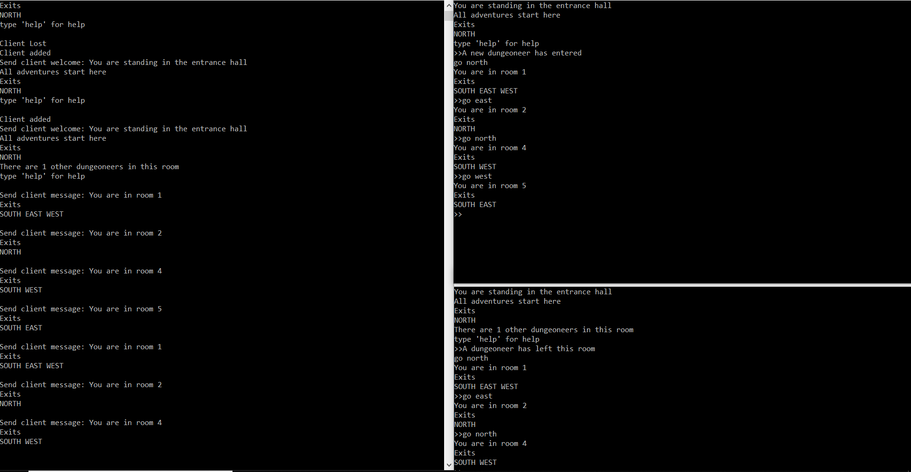

Multi User Dungeon - SQLLite, C# Project
Kuthwala was my first year game project, it was a puzzle/adventure game centered around an animal switching mechanic. Swapping between the two animals allowed the player to traverse different terrain and solve puzzles, as each animal had it's own distinct traits and abilites. The games aesthetic was focused around a low poly style, drawing influence from Native American storytelling.
The game was created in Unreal 4.11, and as this was my first project using Unreal, the majority of the project was spent learning how to properly use the engine and the tools that it provides. The majority of the features were implemented using Blueprints, however a small portion of some of movement and character abilities were created in C++ as I was familiar with this at the time and it made sense to show what I could do. Being first years we massively overscoped the project,a nd we ended up only including a couple of the puzzles that we intended on putting in, however there is a win state, so the brief was completed.
My contribution to the project involved implementing the puzzles that the designers had used, this normally involved creating physics objects that could be interacted with by the player so that they could advance through levels. As well as implementing all of the audio and music, which was all location or game state dependant.
The press kit for the game can be found here. This contains the trailer as well as the original promotional materials that we created.